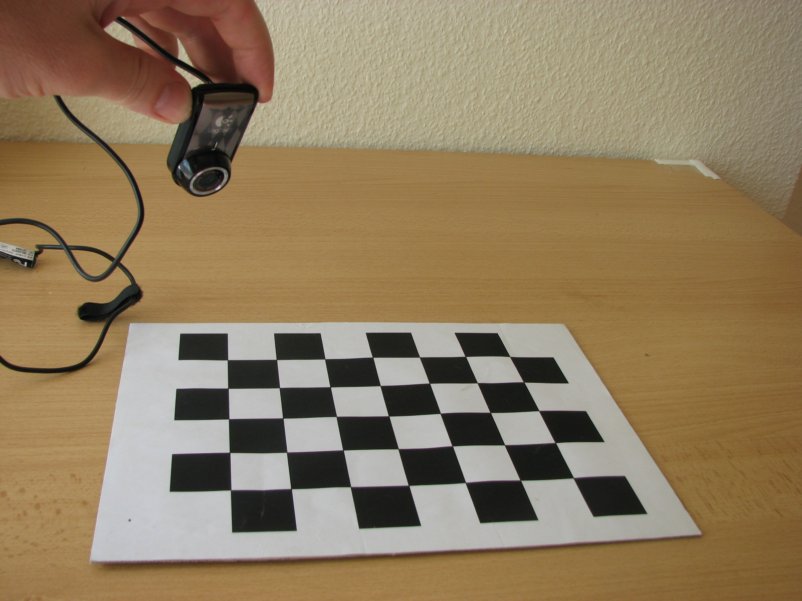
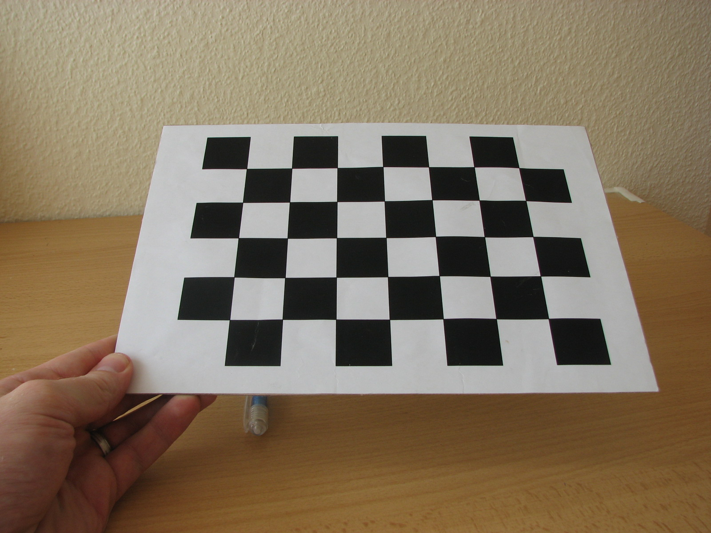
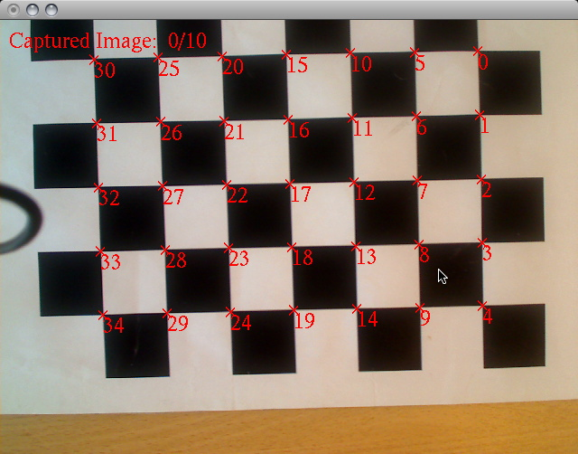
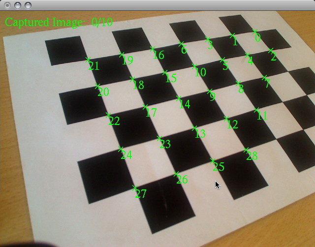
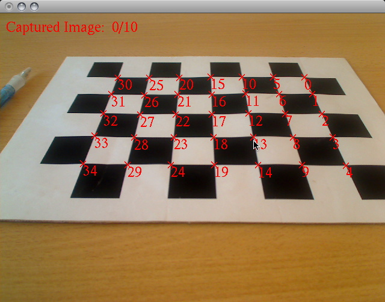
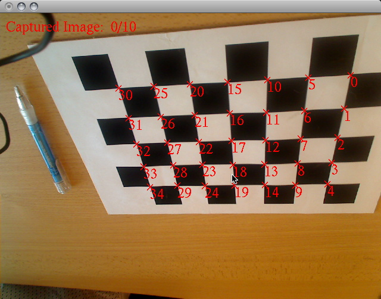
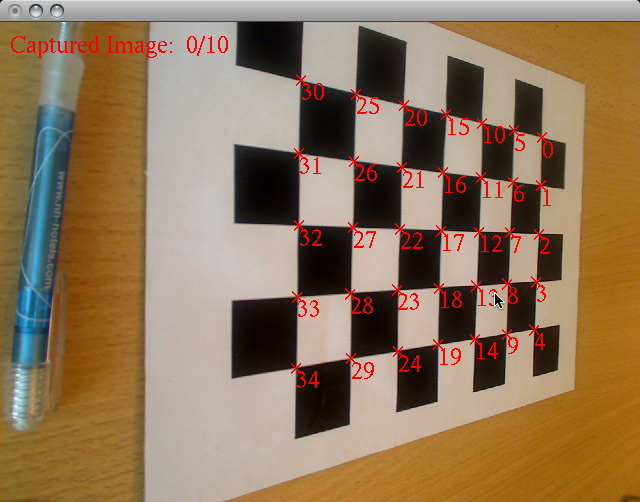
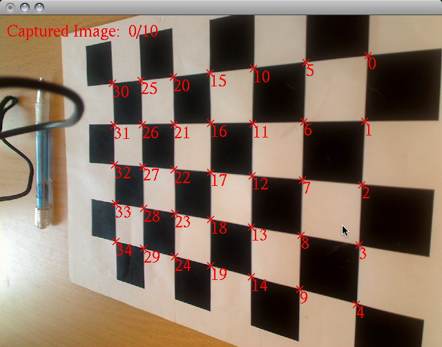
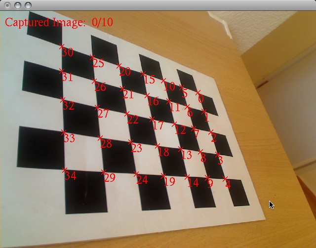

Part of ARToolKit's tracking operates on a binarized image, that is, an image that has been converted into black and white pixels only. All pixels above a certain level of brightness, referred to as the "binarization threshold", or just "threshold" are converted to white, and all pixels below this threshold are converted to black.
The binarization threshold is an 8-bit number that is in the range [0, 255], inclusive. The default value is usually set in the middle of this range, allowing ARToolKit to easily find markers in images that have good contrast. The default value is defined by the symbol AR_DEFAULT_LABELING_THRESH in arConfig.h.
Where images have poor contrast, or are over- or under-exposed, the default binarization threshold should be adjusted to compensate. This is achieved by calling the ARToolKit function arGetLabelingThresh() to get the current threshold value, adjusting it up for an image that is too bright, or down for an image that is too dark, and then calling arSetThreshold() with the new value. This is demonstrated in this snippet from the simpleLite example:
<pre> static void Keyboard(unsigned char key, int x, int y) { int threshChange = 0; switch (key) { case '-': threshChange = -5; break; case '+': case '=': threshChange = +5; break; default: break; } if (threshChange) { int threshold; arGetLabelingThresh(gARHandle, &threshold); threshold += threshChange; if (threshold < 0) threshold = 0; if (threshold > 255) threshold = 255; arSetLabelingThresh(gARHandle, threshold); printf("threshold changed to %d.\n", threshold); } } </pre>
How does the user know how much adjustment to make? The simplest way is to let the user see the image as ARToolKit sees it. ARToolKit includes a "debug" mode to facilitate this.
The debug mode can be toggled on and off easily, as seen in this snippet from the simpleLite example:
<pre> static void Keyboard(unsigned char key, int x, int y) { int mode; switch (key) { case 'D': case 'd': arGetDebugMode(gARHandle, &mode); arSetDebugMode(gARHandle, !mode); break; default: break; } } </pre>
For examples based on use of the gsub_lite library (as simpleLite is), the debug image will be drawn in place of the regular image by the call to arglDispImage() whenever debug mode is enabled.
For examples based on the gsub library (e.g. simpleTest), the debug image must be manually drawn.
In the ARToolKit software, default camera properties are contained in the camera parameter file camera_para.dat, that is read in each time an application is started. These parameters are sufficient for basic tracking for a wide range of different cameras. However, to get best tracking accuracy, particularly when looking directly onto a flat marker, it is important to calibrate your camera. Using a calibrated camera improves tracking accuracy and reduces jitter. In the case of video see-through AR devices (goggles that are not optically see through that usually utilize stereo cameras), having calibrated cameras can help remove lens distortion in the displayed video image.

Using a very simple camera calibration technique it is possible to generate a separate parameter file for the specific camera(s) that are being used. This page presents how to use the utility programs included with ARToolKit to calibrate your video camera.
Calibration works by capturing images of the pre-prepared calibration pattern with the camera. Two calibration pattern image files are provided by the ARToolKit SDK (path: [downloaded ARToolKit SDK root directory]/doc/patterns):
"Calibration chessboard (US Letter).pdf"
"Calibration chessboard (A4).pdf"
Print the PDF file using a media size respective to the labeled PDF filename.

Once printed, the pattern must be affixed to a flat surface. The easiest means of doing this is to use a piece of thin very flat board (as might be obtained from a hardware store) and a dry glue. Using a millimeter rule, measure the size of the edges of the squares. If printed without scaling, this distance will be exactly 30 mm. Other sizes can be used, as long as they are accurately known.
Finally, set up your camera. A calibration file is only valid for one focus setting of the camera (although it will still work at other focal lengths), so choose in advance the focus setting for the camera which will be used most often. This is especially important when your camera supports multiple aspect ratios. While the resolution need not be 1:1 with your camera calibration, the aspect ratio is extremely important.
The "Calibration pattern.pdf" image consists of a grid of black and white squares surrounded by a white border. When viewed through the camera lens, lens distortion causes the straight lines at the edges of the squares to appear curved. The calib_camera program uses the OpenCV library to locate the corners of the squares and then measures the spacing between the corners and uses this information to calculate the lens distortion. The more images captured, and the more angles they are captured from, the lower the error in the distortion measurement.
Open a command prompt:
Mac OS X or Linux: open a Terminal window
or
Windows: open the "Run" prompt from the Start menu, in the "Open:" textbox, type "cmd"<return>
For the Android or iOS version of calib_camera, build and deploy the Android Studio, Eclipse or XCode project available in the respective platform project directory found directly under the root directory of the download ARToolKit SDK specific for the platform.
Run the calib_camera application executable from the command prompt. Change the directory to the path: [downloaded ARToolKit SDK root directory]/bin.
OS X or Linux command-line, type:
<pre> ./calib_camera </pre>
Windows command-line, type:
<pre> calib_camera.exe </pre>
You will see output similar to this in your terminal:
<pre> CHESSBOARD_CORNER_NUM_X = 7 CHESSBOARD_CORNER_NUM_Y = 5 CHESSBOARD_PATTERN_WIDTH = 30.000000 CALIB_IMAGE_NUM = 10 Video parameter: Using default video config. Image size (x,y) = (640,480) </pre>
At this point, you should see the image from the camera appear.
If you need to, the size of the calibration squares, the number of intermediate corners in horizontal and vertical directions (i.e. the number of rows minus 1 and the number of columns minus 1), and the number of calibration images captured can all be adjusted from the command line. Running the utility with the --help option will show the various command-line options for adjusting the default calibration settings.
OS X or Linux command-line, type:
./calib_camera --help
Windows command-line, type:
calib_camera.exe --help
The help text is reproduced here:
Usage: ./calib_camera [options]
Options:
-vconf <video parameter for the camera>
-cornerx=n: specify the number of corners on chessboard in
X direction.
-cornery=n: specify the number of corners on chessboard in
Y direction.
-imagenum=n: specify the number of images captured for calibration.
-pattwidth=n: specify the square width in the chessbaord.
-h or -help or --help: show this message
In addition to command-line options for controlling the calibration pattern settings, a video configuration can also be specified on the command line using the --vconf parameter (followed by the actual video config, in quotes if it includes spaces), allowing you to choose a video format and/or image size, if your camera supports those options.
For example, this invocation on Mac OS X requests the image from the camera be scaled to 640x480:
./calib_camera --vconf "-width=640 -height=480"
If you use the video configuration to select a video size different from that which will be used later, be sure to maintain the same proportions between the width and the height. For example, a 4:3 image of 1600x1200 pixels can be scaled to 800x600 or 640x480, whereas a 16:9 image of 1920x1080 image can be scaled to 860x540. A camera calibration is only valid per aspect ratio.
Calibration requires the capturing of a series of images. In the top-left corner of the capture window is displayed the number of images captured so far. Point the camera at the chessboard grid, and the inner corners of the squares will be highlighted with 'X' marks and numbered.
When the camera can clearly see all the intermediate corners, the 'X' marks turn RED, and a calibration image can be captured: 
If some of the corners are obscured by the edges of the camera frame, or poor lighting or reflection, the 'X' will be GREEN, and no calibration image can be captured until the optical conditions are changed. 
Once you have an image with all red 'X's, you can press the keyboard spacebar. The spacebar tab captures the video frame augmented with red 'X' characters. The relative positions of the 'X' indicators on the captured frame are calculated, recorded, written to standard out of the command-line window and the capture counter is incremented.
In order to obtain a good calibration for the camera, it is important to obtain images of the calibration board at a variety of angles to the camera lens. The images below give examples of the configurations of the calibration board you should try to obtain. Note that these involve holding the calibration board at different angles relative to the camera, including upside-down:     
Once all the calibration images have been captured, that is, ten (ten is the default) presses of the spacebar, the calibration data is tabulated and a distortion factor associated to the camera device is calculated. The tabulated calibration data is written to standard out of the command-line window. At this point, the application prompts for a filename to write the calibration data to.
--------------------------------------
SIZE = 640, 480
Distortion factor: k1=-0.064153, k2=0.000674,
p1=-0.003693, p2=-0.011219,
fx=6819.694824, fy=4906.716797,
x0=-13355.703125, y0=1494.664429,
s=-0.891334
-7651.11364 -0.00000 -13355.70312 0.00000
-0.00000 -5504.91609 1494.66443 0.00000
0.00000 0.00000 1.00000 0.00000
--------------------------------------
Err[ 1]: 0.384557[pixel]
Err[ 2]: 0.637637[pixel]
Err[ 3]: 0.605374[pixel]
Err[ 4]: 0.517292[pixel]
Err[ 5]: 0.730103[pixel]
Err[ 6]: 0.560028[pixel]
Err[ 7]: 0.586818[pixel]
Err[ 8]: 0.501263[pixel]
Err[ 9]: 0.437201[pixel]
Err[10]: 0.385920[pixel]
Filename[camera_para.dat]:
If the calibration data is good, there should be very low estimated error in each image: hopefully, less than 1 pixel. Error greater than 2 pixels indicates a poor calibration, and it should be abandoned and restarted.
At this point, you can press return or enter on the keyboard to save the data in a file named "camera_para.dat".
That's all there is to it. This new calibration procedure takes only a minute, and should be fast enough that you can recalibrate your camera any time you change its focus or zoom. With good calibration, you'll see much improved tracking in ARToolKit.
To use your new calibration file, just replace the default camera_para.dat file in ARToolKit's bin/Data directory with your newly saved data. It can be helpful to keep a collection of camera_para.dat files for cameras you commonly use.
If calibrating a stereo camera, calibrate each eye separately first, saving the parameters, then run the program calib_stereo to perform the final step of inter-ocular calibration.
ARToolKit includes libARvideo, a cross-platform library which captures video from a variety of different sources. In general, most users of ARToolKit who have a single webcam attached to their system will never delve into the workings of this library. However, the module or modules inside this library generally allow for a degree of configuration to control parameters of the capture sources with which they interface.
This section of the manual details some of the configuration options available with libARvideo.
Video configurations are passed to libARvideo in a standard way; as a c-string containing text. What to put in the contents of the string depends on your capture source.
The contents of the string are different for different capture sources because although libARvideo presents a standard API for passing video to other code (e.g. libAR, libARgsub_lite and libARgsub), there is custom code inside libARvideo for each capture source (e.g. QuickTime, DirectShow, libdc1394). The capture sources generally implement a variety of different approaches to video stream acquisition. So, the configuration parameters are different depending on the underlying capture module being used.
The simplest way to specify the video configuration (without recompiling the example applications) is to create an environment variable ARTOOLKIT5_VCONF with the video configuration you wish to use.
Some of the ARToolKit utilities (including calib_camera, calib_stereo and check_id) accept video configuration(s) as command-line parameters. The desired configuration is passed after a parameter "--vconf" (or --vconfL or --vconfR for calib_stereo). Note that if the video configuration string includes spaces, it must be quoted to prevent the shell passing it as multiple parameters.
Video configuration can also be passed to libARvideo programmatically (as the sole parameter to the arVideoOpen() call). When no string (NULL) or an empty string ("") is passed, libARvideo looks for an environment variable "ARTOOLKIT5_VCONF" (as mentioned above) for the string. If this environment variable is not found, the video module will use a default configuration.
In most of the ARToolKit examples, the video configuration is specified in a string named "vconf". Do a search in your source editor for "vconf" to see this. So in most of the examples, editing the vconf string in the source code will change the video configuration being used.
Of course, editing source code requires recompiling for the changes to take effect, so a few of the examples accept a command-line parameter and use this as vconf. You can look at the source code to see if a given example does so.
ARToolKit for Unity allows you to specify video configuration separately for each supported platform directly in the Unity Editor.
Where more than one capture source has been compiled into libARvideo on a given platform, you are allowed to switch between the options.
This table lists the capture sources available on each platform. Note: If you have a binary release of ARToolKit, not all of these capture sources may have been compiled into your copy!:
| Platform | Capture source (descriptive name) | Constant required in <AR/config.h> for this source to be compiled into libARvideo | video config string to select this capture source | Avail.: (1) | Unavail.: (2) | |---------------------------------------------------|-----------------------------------|-----------------------------------------------------------------------------------|---------------------------------------------------|-------------------------|---------------| | All | Dummy input | AR_INPUT_DUMMY | -device=Dummy | 4.0.0 | | | Mac OS X, Windows, Linux | JPEG image input | AR_INPUT_IMAGE | -device=Image | 4.6.2 | | | Linux | Video4Linux | AR_INPUT_V4L | -device=LinuxV4L | 4.0.0 | | | Linux | GStreamer | AR_INPUT_GSTREAMER | -device=GStreamer | 4.3.2 | | | Linux | libdc1394 | AR_INPUT_1394CAM | -device=Linux1394Cam | 4.0.0 | | | Mac OS X, Windows | QuickTime® (enhanced) | AR_INPUT_QUICKTIME | -device=QUICKTIME | 4.3.0 | | | Windows | DirectShow® | AR_INPUT_WINDOWS_DIRECTSHOW | -device=WinDS | 4.0.0644 | 4.0.065,4.1.x | | Windows | DSVideoLib | AR_INPUT_WINDOWS_DSVIDEOLIB | -device=WinDSVL | 4.1.0 | | | Windows | DragonFly FlyCapture® | AR_INPUT_WINDOWS_DRAGONFLY | -device=WinDF | 4.0.0644 | 4.0.065 | | Mac OS X | QuickTime® | AR_INPUT_QUICKTIME_OLD | -device=QUICKTIME_OLD | 4.0.0 | | | Windows | HDCam64 | AR_INPUT_WINDOWS_HDCAM | -device=WinHD | 4.0.0644 | 4.0.065 | | Linux | libdv | AR_INPUT_DV | -device=LinuxDV | 4.0.0 | 4.1.x, 4.3.x | | SGI Irix | SGI video input | AR_INPUT_SGI | -device=SGI | 4.0.0 | 4.1.x, 4.3.x | | Mac OS X | QuickTime® (v7.0 and later) | AR_INPUT_QUICKTIME7 | -device=QuickTime7 | 4.5.0 | | | iOS | iOS video input | AR_INPUT_IPHONE | -device=iPhone | 4.4.3 (iOS release 1.0) | | | Windows | Media Foundation | AR_INPUT_WINDOWS_MEDIA_FOUNDATION | -device=WinMF | 5.1.5 | | | Windows Store (Windows 8.1 and Windows Phone 8.1) | Windows Media Capture | AR_INPUT_WINDOWS_MEDIA_CAPTURE | -device=WinMC | 5.1.7 | |
(1): First version of ARToolKit Professional in which this capture source became available. (2): Version(s) of ARToolKit Professional in which this source is/was unavailable or unusable.
Notes on the tables below:
| video config string | usage notes | Default value | Avail.: (1) | Unavail.: (2) | |---------------------|-------------------------------------------------------------------------------------------------------------------------------|---------------------------------|-------------|---------------| | -device=Dummy | Select this device for use. | | 4.0.0 | | | -width=N | Specify the width of the returned image. | 640 | 4.0.0 | | | -height=N | Specify the height of the returned image. | 480 | 4.0.0 | | | -bufferpow2 | Requests that images are returned in a buffer which has power-of-two dimensions. | Buffers are same size as image. | 4.4.3 | | | -format=X | Return images with pixels in format X, where X is one of the following format tokens: BGRA, RGBA, RGBA_5551, RGBA_4444, y420 | BGRA | | |
| video config string | usage notes | Default value | Avail.: (1) | Unavail.: (2) | |-------------------------------|-------------------------------------------------------------------------------------------------------------------------------------------------------------------------------------------------------------------------------------------------------------------------------------------------------------------------------------------------------------------------------------------------------------------------------------------------------------------------------------------------------------------------------------------------------------------------------|-------------------------------------------------------------------------------------|-------------|---------------| | -device=Image | Select this device for use. | | 4.6.2 | | | -width=N | Specify the width of the returned image. | Width of first JPEG in image list. | 4.6.2 | | | -height=N | Specify the height of the returned image. | Height of first JPEG in image list. | 4.6.2 | | | -bufferpow2 | Requests that images are returned in a buffer which has power-of-two dimensions. | Buffer of same size as first JPEG in image list. | 4.6.2 | | | -format=X | Return images with pixels in format X, where X is one of the following format tokens: RGB, RGBA, MONO. Note that where the format requires a conversion from the native JPEG format (usually RGB) to anything other than MONO, there is a performance penalty imposed by the conversion. ARToolKit can natively handle RGB, RGBA and MONO JPEG formats, however in some circumstances, displaying RGB format images may have a performance penalty compared to RGBA format images because of data alignment issues. Benchmarking is recommended if performance is of concern. | RGB for RGB-format JPEGs, RGBA for RGBA-format JPEGs, or MONO for monochrome JPEGs. | 4.6.2 | | | -[no]loop | In loop mode, after reading last image, the next read will return the first image. In noloop mode, no after reading the last image, no further images will be returned. May be used multiple times; later invocations will override earlier. | -noloop | 4.6.2 | | | -image=pathname | | | | | | -image="pathname with spaces" | Specifies image to be read from file. Pathname is relative to the current working directory, or an absolute pathname in the system-native format. May be used an arbitrary number of times in a single config. string. | | 4.6.2 | |
| video config string | usage notes | Default value | Avail.: (1) | Unavail.: (2) | |------------------------|-------------------------------------------|---------------|-------------|---------------| | -device=LinuxV4L | Select this device for use. | | 4.0.0 | | | -width=N | Specify the width of the returned image. | 640 | 4.0.0 | | | -height=N | Specify the height of the returned image. | 480 | 4.0.0 | | | -contrast=N | specifies contrast. (0.0 <-> 1.0) | | 4.0.0 | | | -brightness=N | specifies brightness. (0.0 <-> 1.0) | | 4.0.0 | | | -color=N | specifies color. (0.0 <-> 1.0) | | 4.0.0 | | | -hue=N | specifies hue. (0.0 <-> 1.0) | | 4.0.0 | | | -whiteness=N | specifies whiteness. (0.0 <-> 1.0) | | 4.0.0 | | | -channel=N | specifies source channel. | 3 | 4.0.0 | | | -dev=filepath | specifies device file. | /dev/video0 | 4.0.0 | | | -mode=[PAL/NTSC/SECAM] | specifies TV signal mode. | NTSC | 4.0.0 | | | -format=[BGR/BGRA] | specifies pixel format. | BGR | 4.0.0 | |
Extra help on building this video capture module can be found on the page Building libARvideo.
| video config string | usage notes | Default value | Avail.: (1) | Unavail.: (2) | |----------------------------------------------------------------------------------------------------------------------------------------------------------------------------------------------------------------------------------------------------------------------------------------------------|-------------------------------------------------------------------------------------------------------|------------------------------------------------|-------------|---------------| | -device=Linux1394Cam | Select this device for use. | | 4.0.0 | | | -port=N | specifies a FireWire adaptor port (-1: Any). | 0 | 4.0.0 | | | -euid=N | specifies EUID of a FireWire camera (-1: Any). | 0 | 4.0.0 | | | -mode=[320x240_YUV422 / 640x480_YUV422 / 640x480_RGB / 640x480_YUV411 / 640x480_YUV411_HALF / 640x480_MONO / 640x480_MONO_COLOR / 640x480_MONO_COLOR2 / 640x480_MONO_COLOR3 / 640x480_MONO_COLOR_HALF / 640x480_MONO_COLOR_HALF2 / 640x480_MONO_COLOR_HALF3 / 1024x768_MONO / 1024x768_MONO_COLOR] | specifies input image format. | Depends on camera selected during execution of | 4.0.0 | | | -rate=N | specifies desired framerate of a FireWire camera. (1.875, 3.75, 7.5, 15, 30, 60) | 30 | 4.0.0 | | | -reset | resets camera to factory default settings. This is required for DFK21AF04 when it has been connected. | | 4.0.0 | |
Extra help on building this video capture module can be found on the page Building libARvideo.
| video config string | usage notes | Default value | Avail.: (1) | Unavail.: (2) | |---------------------|---------------|-------------|---------------|-------------| | -device=WinDS | Select this device for use. | 4.0.0644 | 4.0.065 | | -showDialog | Request that the WDM capture PIN (configuration sheet) be shown to the user when the video stream is opened. | -showDialog (only if no config string is supplied). | 4.0.0644 | 4.0.065 | | -showDeviceList | Do not actually open the device, but instead dump a list of device numbers and device names to the standard output. The format of the dump is up to 2 decimal digits (beginning with '1' for the first device), followed by a colon and a space, and the remaining characters before the new line constituting the device name, as known to WDM. | 4.0.0644 | 4.0.065 | | -devNum=n | Open device n, rather than the default device. | 1 | 4.0.0644 | 4.0.065 | | -flipH | Flip camera image horizontally. | 4.0.0644 | 4.0.065 | | -flipV | Flip camera image vertically. | -flipV (only if no config string is supplied). | 4.0.0644 | 4.0.065 |
| video config string | usage notes | Default value | Avail.: (1) | Unavail.: (2) | |-------------------------------------------------------------------------------------------------------------------------------------------------------------------------------------------------------------------------------------------------------------------------------------------------------------|---------------------------------------------------------------------------------------------------|---------------|-------------|---------------| | -device=WinDF | Select this device for use. | | | | | -rate=N | Specifies desired input framerate. (1.875, 3.75, 7.5, 15, 30, 60, 120) | 15 | 4.6.0 | | | -mode=[160x120YUV444 / 320x240YUV422 / 640x480YUV411 / 640x480YUV422 / 640x480RGB / 640x480Y8 / 640x480Y16 / 800x600YUV422 / 800x600RGB / 800x600Y8 / 800x600Y16 / 1024x768YUV422 / 1024x768RGB / 1024x768Y8 / 1024x768Y16 / 1280x960YUV422 / 1280x960RGB / 1280x960Y8 / 1280x960Y16 / 1600x1200YUV422 / 1600x1200RGB / 1600x1200Y8 / 1600x1200Y16] | Specifies input image format. N.B. Not all formats listed may be supported by ARToolKit. | 1024x768RGB | 4.6.0 | | | -index=N | Specifies bus index of device to use. (Range is from 0 to number of connected devices minus one.) | 0 | 4.6.0 | |
| video config string | usage notes | Default value | Avail.: (1) | Unavail.: (2) | |---------------------|-------------|---------------|-------------|---------------| | -device=WinHD | Select this device for use. | | | |
The QuickTime7 video plugin uses the QTKit API introduced with QuickTime version 7 on Mac OS X. It offers improved performance over the previous QuickTime modules, however as of ARToolKit Professional v4.5.0, it does not yet support reading from file or network stream, so the previous QUICKTIME module should still be used in that case.
| video config string | usage notes | Default value | Avail.: (1) | Unavail.: (2) | |---------------------|-------------|---------------|-------------|---------------| | -device=QuickTime7 | Select this device for use. | | 4.5.0 | | -width=w | Scale camera native image to width w. | camera native image width | 4.5.0 | | | -height=h | Scale camera native image to height h. | camera native image height | 4.5.0 | | | -pixelformat=cccc | Return images with pixels in format cccc, where cccc is either a numeric pixel format number or a valid 4-character-code for a pixel format. The following numeric values are supported: 24 (24-bit RGB), 32 (32-bit ARGB), 40 (8-bit grey) The following 4-character-codes are supported: BGRA, RGBA, ABGR, 24BG, 2vuy, yuvs. (See http://developer.apple.com/library/mac/#technotes/tn2010/tn2273.html) | Depends on camera; for many USB video-class devices, either '2vuy' or 'yuvs'. | 4.5.0 | | | -source=N | Acquire video from connected source device with index N. | 0 | 4.5.0 | | | -nomuxed | Do not search for video from multiplexed video/audio devices (e.g. DV cams). | Off (i.e. muxed sources are included in the search) | 4.6.0 | |
Extra help on building this video capture module can be found on the page Building libARvideo.
The QuickTime video plugin can operate in two modes:
| video config string | usage notes | Default value | Avail.: (1) | Unavail.: (2) | |---------------------|-------------|---------------|-------------|---------------| | -device=QUICKTIME | Select this device for use. | | 4.3.0 | | | -[no]dialog | Don't display video settings dialog. | -dialog | 4.3.0 | | | -[no]standarddialog | Don't remove unnecessary panels from video settings dialog. | -nostandarddialog | 4.3.0 | | | -width=w | Scale camera native image to width w. | 640 | 4.3.0 | | | -height=h | Scale camera native image to height h. | 480 | 4.3.0 | | | -[no]fps | Overlay camera frame counter on image. | -nofps | 4.3.0 | | | -grabber=n | With multiple QuickTime video grabber components installed, use component n (default n=1). N.B. It is NOT necessary to use this option if you have installed more than one video input device (e.g. two cameras) as the default QuickTime grabber can manage multiple video channels. | 1 | 4.3.0 | | | -pixelformat=cccc | Return images with pixels in format cccc, where cccc is either a numeric pixel format number or a valid 4-character-code for a pixel format. The following numeric values are supported: 24 (24-bit RGB), 32 (32-bit ARGB), 40 (8-bit grey) The following 4-character-codes are supported: BGRA, RGBA, ABGR, 24BG, 2vuy, yuvs. (See http://developer.apple.com/library/mac/#technotes/tn2010/tn2273.html) | Depends on platform; default for Mac OS X is 32 (i.e. ARGB), default for Windows is BGRA. | 4.3.0 | | | -[no]fliph | Flip camera image horizontally. | -nofliph | 4.3.0 | | | -[no]flipv | Flip camera image vertically. | -noflipv | 4.3.0 | | | -[no]singlebuffer | Use single buffering of captured video instead of triple-buffering. | -nosinglebuffer | 4.3.0 |
| video config string | usage notes | Default value | Avail.: (1) | Unavail.: (2) | |---------------------|-------------|---------------|-------------|---------------| | -device=QUICKTIME | Select this device for use. | 4.3.0 | | | -movie=file:///path/to/file or -movie="file:///path/to/file" | Specifies that video should be acquired from a QuickTime movie resource. This can be any valid movie resource that QuickTime can open, including files and streams. If a movie file is to be opened, supply a file URI specifying the full pathname. Pathnames must be URI-encoded, i.e. if the pathname contains spaces, these should be replaced with '+' characters. e.g. -movie="file:///C:/Program+Files/QuickTime/Sample.mov" or -movie=file:///Developer/Examples/WebKit/WebKitMoviePlugIn/sample.mov . If a movie stream is to be opened, it may be specified via an "http://", "rtsp://" or "ftp://" URL, or it can be referred to in a stream description file (a .sdp file). In ARToolKit versions 4.3.0 - 4.4.4, the maximum URL length was 255 characters. As of ARToolKit 4.5.0, this has been increased to 1023 characters. | 4.3.0 | | | -[no]1to1 | Do not fit the movie to the window or buffer size, but instead display it at its original size (1 to 1 scaling). | -no1to1 | 4.3.0 | | | -[no]fill | Rather than fitting the movie into the window so that all the movie is visible, scale it so that it completely fills the window or buffer. The movie's aspect ratio will be maintained, and this may result in some of the movie being clipped at the top and bottom or left and right. | -nofill | 4.3.0 | | | -[no]stretch | Rather than fitting the movie into the window so that all the movie is visible, scale it so that it completely fills the window or buffer. The movie's aspect ratio will be stretched if necessary so that no pixels are clipped. | -nostretch | 4.3.0 | | | -[no]loop | Request that the movie loop continuously. This parameter has no effect for streaming movies. Unless this parameter is specified, calls to arVideoQuickTimeMovieIdle() will return AR_E_EOF when the movie has finished playing. | -loop | 4.3.0 | | | -[no]showcontroller | Show the QuickTime movie controller in the frame. (Unfortunately, the user will not be able to interact with the controller to pause and jog the movie.) | -showcontroller | 4.3.0 | | | -[no]mute | Set movie audio volume to 0. | -nomute | 4.3.0 | | | -[no]pause | Open movie in paused state. A call to arVideoCapStart() would be required to unpause the movie. | -pause | 4.3.0 | | | -width=w | Scale movie native frame to width w. | Width of movie frame. | 4.3.0 | | | -height=h | Scale movie native frame to height h. | Height of movie frame. | 4.3.0 | | | -[no]fliph | Flip movie frame horizontally. | -nofliph | 4.3.0 | | | -[no]flipv | Flip movie frame vertically. | -noflipv | 4.3.0 | | | -pixelformat=cccc | Ignored unless -offscreen is also passed, requests return of movie frames with pixels in format cccc, where cccc is either a numeric pixel format number or a valid 4-character-code for a pixel format. The following values are supported: 32, BGRA, RGBA, ABGR, 24, 24BG, 2vuy, yuvs. (See http://developer.apple.com/quicktime/icefloe/dispatch020.html) | Depends on platform; default for Mac OS X is 32 (i.e. ARGB), default for Windows is BGRA. | 4.3.0 | | | -[no]singlebuffer | Ignored unless -offscreen is also passed, use single buffering of captured movie instead of triple-buffering. | -nosinglebuffer | 4.3.0 | |
| video config string | usage notes | Default value | Avail.: (1) | Unavail.: (2) | |-----------------------|-------------------------------------------|---------------|-------------|---------------| | -device=QUICKTIME_OLD | Select this device for use. | | 4.0.0 | | | -width=N | Specify the width of the returned image. | 640 | 4.0.0 | | | -height=N | Specify the height of the returned image. | 480 | 4.0.0 | |
| video config string | usage notes | Default value | Avail.: (1) | Unavail.: (2) |
|------------------------------|--------------------------------------------------------------------------------------------------------------------------------------------------------------------------------------------------------------------------------------------|-------------------------------------------------------------------------------------------------------------------------------------------------------------------------------------------------|-------------|---------------|
| -device=WinDSVL | Select this device for use. | | 4.1.0 | |
| remainder of config string | Specify either an XML string (i.e. beginning '<?xml') or a pathname to an XML file (e.g. 'config.XML'), conforming to the DSVideoLib XML Schema (DsVideoLib.xsd). View an interactive SVG view of the DSVideoLib XML Schema. | <?xml version="1.0" encoding="UTF-8"?><dsvl_input><camera show_format_dialog="true" friendly_name=""><pixel_format><RGB32 flip_h="false" flip_v="true"/></pixel_format></camera></dsvl_input> | 4.1.0 | |
| video config string | usage notes | Default value | Avail.: (1) | Unavail.: (2) | |------------------------------|-----------------------------------------------------------------------------------------------------------------|---------------|-------------|---------------| | -device=GStreamer | Select this device for use. | | 4.3.2 | | | remainder of config string | Specifies a configuration string following the gst-launch syntax. See more at GStreamer Configuration. | | 4.3.2 | |
The iOS video plugin is available on Apple iOS devices including iPhone 3G, iPhone 3GS, iPhone 4, iPod touch 4G and iPad 2. As of ARToolKit for iOS version 4.5.5 (release 4) the iOS video plugin can operate in either two modes; either acquiring live video from a camera on the iOS device, or playing a pre-recorded video file stored in the app's bundle resource directory.
| video config string | usage notes | Default value | Avail.: (1) | Unavail.: (2) | |---------------------|-----------------------------------------------------------------------------------------------------------------------------------------------------------------------------------------------------------------------------------------------------------------------------------------------------------------------------|--------------------------------------------------------------------|---------------------|---------------| | -device=iPhone | Select this device for use. | | 4.4.3 (release 1.0) | | | -format=X | Return images with pixels in format X, where X is one of the following format tokens: 420v, 420f, BGRA, RGBA, RGBA_5551, RGBA_4444 | 420f (ARToolKit v5.0 and later.), BGRA (ARToolKit version pre-5.0) | 4.4.3 (release 1.0) | | | -preset=X | Specify use of camera settings preset X, where X is one of: cif, 480p, 720p, 1080p, low, medium, high, photo. (N.B.:480p=640x480, i.e. 4:3 aspect ratio, 720p=1280x720 and 1080p=1920x1080 i.e. 16:9 aspect ratio). | medium | 4.5.1 (release 2.0) | | | -position=X | Choose between rear/back and front-mounted camera (where available). Allowable values for X include: rear, back, front. (N.B.:rear is a synonym for back). Front is not supported on iPhone 3G or iPhone 3GS. | rear | 4.5.1 (release 2.0) | | | -[no]flipv | Flip the incoming image from the camera vertically. On front mounted-cameras, this option is on by default (but can be overridden by specifying -noflipv). Flipping the video vertically matches the orientation of the video image (when displayed on the screen of the device) to the physical orientation of the device. | noflipv (on rear camera). flipv (on front camera) | 4.5.4 (release 3.0) | | | -[no]fliph | Flip the incoming image from the camera horizontally. | nofliph | 4.6.6 (release 16) | | | -width=w | Crop native camera image width to w. | camera native image width for given preset (see above.) | 4.4.3 (release 1.0) | 4.5.0- | | -height=h | Crop native camera image height to h. | camera native image height for given preset (see above.) | 4.4.3 (release 1.0) | 4.5.0- | | -bufferpow2 | Requests that images are returned in a buffer which has power-of-two dimensions. | camera native image size for given preset (see below.) | 4.4.3 (release 1.0) | 4.5.0- |
| video config string | usage notes | Default value | Avail.: (1) | Unavail.: (2) | |------------------------------------------|----------------------------------------------------------------------------------------------------------------------------------------------------------------------------------------------------------------------------------------------------------------------------------------------------------------------------------------------------------------------------------|------------------------|---------------------|---------------| | -device=iPhone | Select this device for use. | | 4.5.5 (release 4.0) | | | -movie=pathname or -movie="pathname" | Specifies that video should be acquired from a movie resource. This can be any valid movie file resource that iOS can open, but typically MPEG-4 (h.264 video with optional AAC audio). The pathname is relative to the resources directory of the app bundle. If the pathname contains spaces, it must be surrounded with double quotes ("). e.g. -movie="My great sample.mov". | | 4.5.5 (release 4.0) | | | -[no]1to1 | N.B. CURRENTLY IGNORED. Do not fit the movie to the window or buffer size, but instead display it at its original size (1 to 1 scaling). | -no1to1 | 4.5.5 (release 4.0) | | | -[no]fill | N.B. CURRENTLY IGNORED. Rather than fitting the movie into the window so that all the movie is visible, scale it so that it completely fills the window or buffer. The movie's aspect ratio will be maintained, and this may result in some of the movie being clipped at the top and bottom or left and right. | -nofill | 4.5.5 (release 4.0) | | | -[no]stretch | N.B. CURRENTLY IGNORED. Rather than fitting the movie into the window so that all the movie is visible, scale it so that it completely fills the window or buffer. The movie's aspect ratio will be stretched if necessary so that no pixels are clipped. | -stretch | 4.5.5 (release 4.0) | | | -[no]loop | Request that the movie loop continuously. | -loop | 4.5.5 (release 4.0) | | | -[no]mute | Set movie audio volume to 0. | -nomute | 4.5.5 (release 4.0) | | | -[no]pause | Open movie in paused state. A call to arVideoCapStart() would be required to unpause the movie. | -pause | 4.5.5 (release 4.0) | | | -width=w | Scale movie native frame to width w. | Width of movie frame. | 4.5.5 (release 4.0) | | | -height=h | Scale movie native frame to height h. | Height of movie frame. | 4.5.5 (release 4.0) | | | -[no]fliph | N.B. CURRENTLY IGNORED. Flip movie frame horizontally. | -nofliph | 4.5.5 (release 4.0) | | | -[no]flipv | Flip movie frame vertically. | -noflipv | 4.5.5 (release 4.0) | | | -pixelformat=cccc | Ignored unless -offscreen is also passed, requests return of movie frames with pixels in format cccc, where cccc is either a numeric pixel format number or a valid 4-character-code for a pixel format. The following values are supported: 32, BGRA, RGBA, ABGR, 24, 24BG, 2vuy, yuvs. (See http://developer.apple.com/quicktime/icefloe/dispatch020.html) | BGRA | 4.5.5 (release 4.0) | |
| video config string | usage notes | Default value | Avail.: (1) | Unavail.: (2) | |---------------------|-------------|---------------|-------------|---------------| | -device=WinMF | Select this device for use. | | 5.1.5 | | | -showDeviceList | Do not actually open the device, but instead dump a list of device numbers and device names to the standard output. The format of the dump is up to 2 decimal digits (beginning with '1' for the first device), followed by a colon and a space, and the remaining characters before the new line constituting the device name, as known to WDM. | -noShowDeviceList | 5.1.5 | | | -noShowDeviceList | Override a previous -showDeviceList option | -noShowDeviceList | 5.1.5 | | | -devNum=n | Open device n, rather than the default device. E.g. if two cameras are connected, use -devNum=2 to access the second camera. | 1 | 5.1.5 | | | -format=X | Return images with pixels in format X, where X is one of: BGRA, BGR, NV12/420f, 2vuy/UYVY, yuvs/YUY2, RGB_565, RGBA_5551. The most reliable format is BGRA, due to support within Media Foundation for conversion from YUV-colour spaces to RGB colour space. Other formats must be supported natively on the device in order for the request to succeed. | Default pixel format. | 5.1.5 | | | -width=w | Request video format of width w pixels | Default frame width | 5.1.5 | | | -height=h | Request video format of height h pixels | Default frame height | 5.1.5 | | | -flipV | Flip image vertically. | -noFlipV | 5.1.5 | | | -noFlipV | Override a previous -flipV option and do not flip image vertically. | -noFlipV | 5.1.5 | | | -showFormats | Dump the full list of native formats to the console. This is helpful in determining device capabilities. | -noShowFormats | 5.1.5 | | | -noShowFormats | Override a previous -showFormats option | -noShowFormats | 5.1.5 | |
| video config string | usage notes | Default value | Avail.: (1) | Unavail.: (2) | |---------------------|----------------------------------------------------------------------------------------------------------------------------------------------------------------------------------------------------------------------------------------------------------------------------------------------------------------------------------------------------------------|-----------------------|-------------|---------------| | -device=WinMC | Select this device for use. | | 5.1.7 | | | -position=X | Choose between rear/back and front-mounted (where available). Other options include cameras mounted on left, right, top or bottom edges of the device. Allowable values for X include: rear, back, front, left, right, top, bottom, default. (N.B.:rear is a synonym for back). | default | 5.1.7 | | | -devNum=n | Open device n, rather than the default device. E.g. if two cameras are connected, use -devNum=2 to access the second camera. If this option is combined with the -position option, then it will choose the n'th device at the preferred position. E.g. to choose the second of two rear cameras, you could use -position=rear -devNum=2. | 1 | 5.1.7 | | | -format=X | Return images with pixels in format X, where X is one of: BGRA, BGR, NV12/420f, 2vuy/UYVY, yuvs/YUY2, RGB_565, RGBA_5551. The most reliable format is BGRA, due to support within Windows Media Capture for conversion from YUV-colour spaces to RGB colour space. Other formats must be supported natively on the device in order for the request to succeed. | Default pixel format. | 5.1.7 | | | -width=w | Request video format of width w pixels | Default frame height | 5.1.7 | | | -height=h | Request video format of height h pixels | Default frame height | 5.1.7 | | | -flipV | Flip image vertically. | -noFlipV | 5.1.7 | | | -noFlipV | Override a previous -flipV option and do not flip image vertically. | -noFlipV | 5.1.7 | |
A variety of GStreamer pipelines can be constructed, for example to pull video from a webcam, local file, or network stream. These are the important points to observe regarding where ARToolKit fits into a GStreamer pipeline:
Putting these points together, the last part of the GStreamer pipeline for ARToolKit will usually be:
ffmpegcolorspace ! video/x-raw-rgb,bpp=24 ! identity name=artoolkit sync=true ! fakesink
Note also that ARToolKit will respect the size of incoming video, so you can add the 'width=' and 'height=' properties to the capsfilter element, should you so desire.
Some complete examples:
v4l2src device=/dev/video0 use-fixed-fps=false ! ffmpegcolorspace ! video/x-raw-rgb,bpp=24 ! identity name=artoolkit sync=true ! fakesinkfilesrc location=gstreamer_test_xvid.avi ! decodebin2 ! ffmpegcolorspace ! video/x-raw-rgb,bpp=24 ! identity name=artoolkit sync=true ! fakesinkvideotestsrc ! capsfilter caps=video/x-raw-rgb,bpp=24 ! identity name=artoolkit sync=true ! fakesinkFurther interesting reading concerning GStreamer and webcam control:
{kind=link}